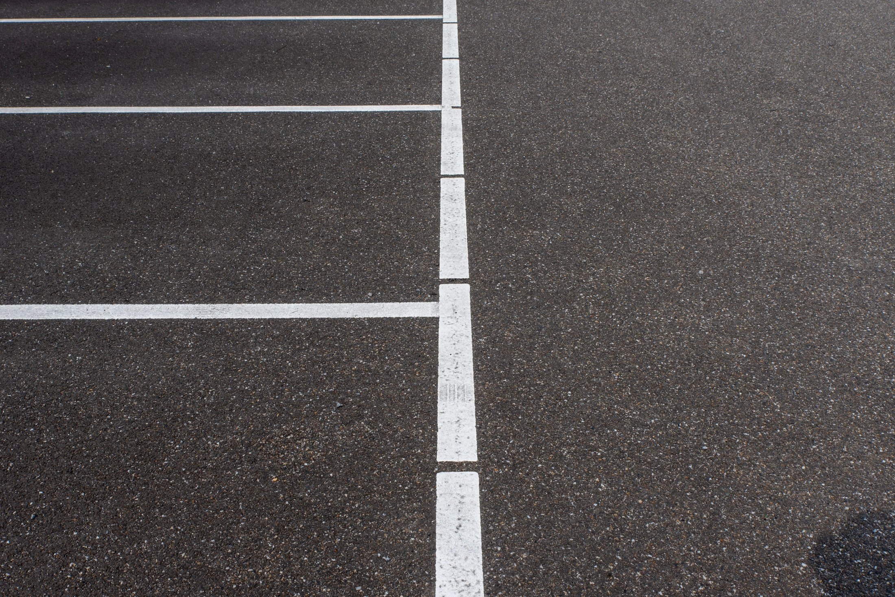
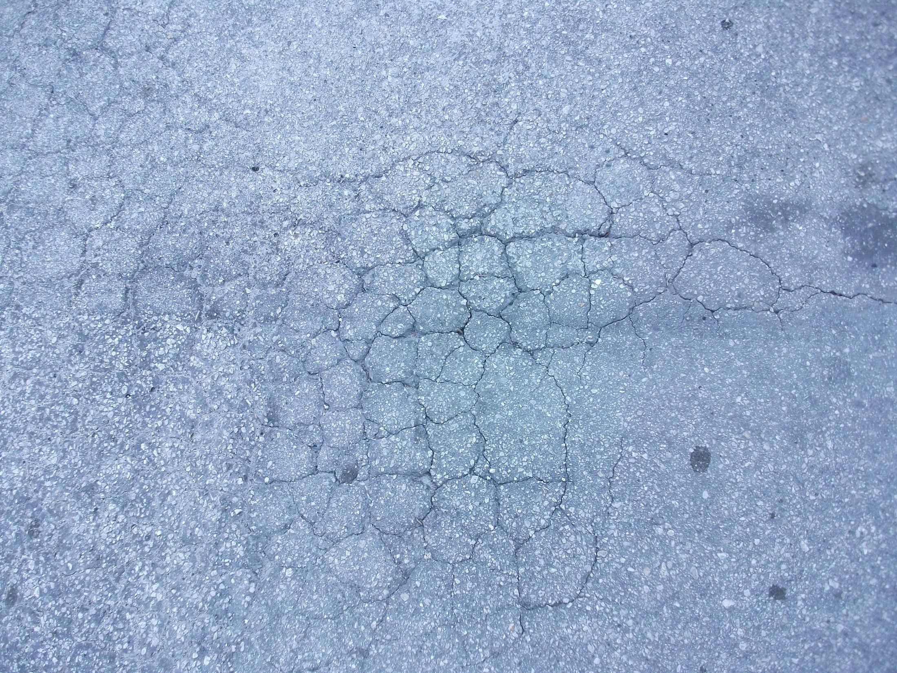
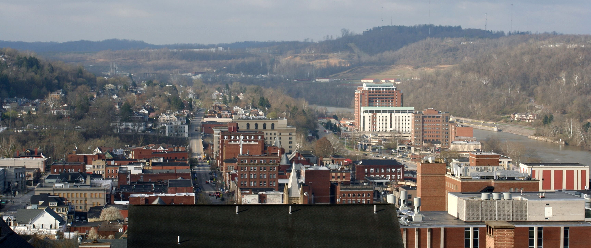
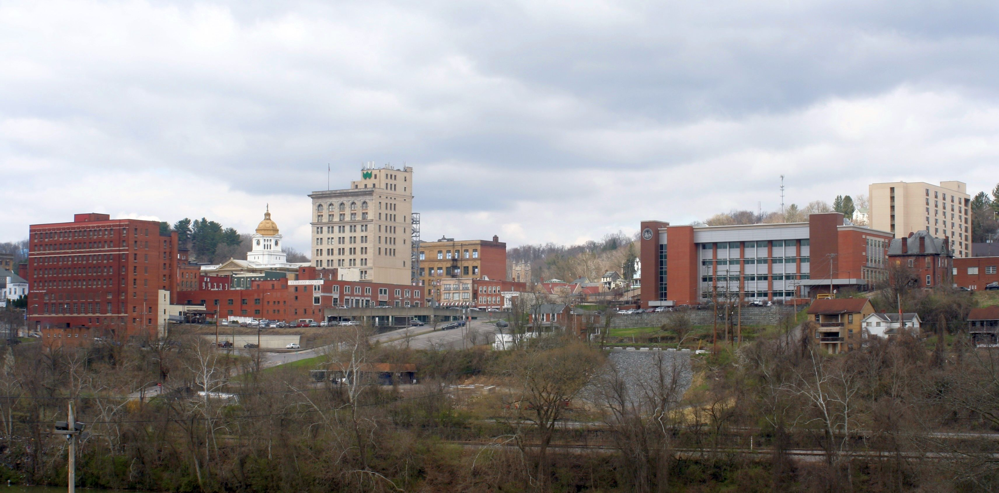
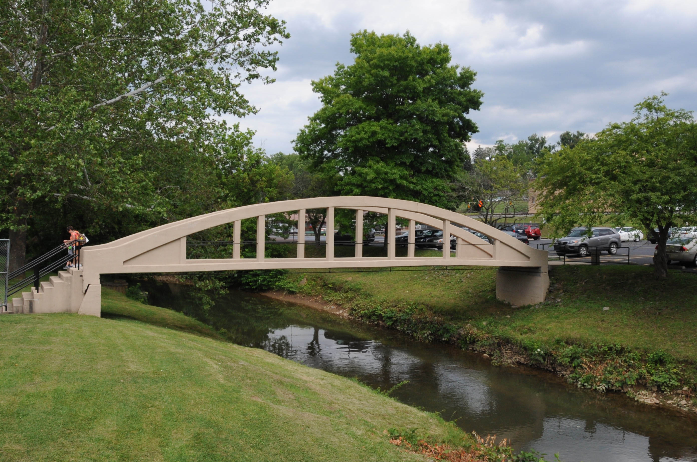
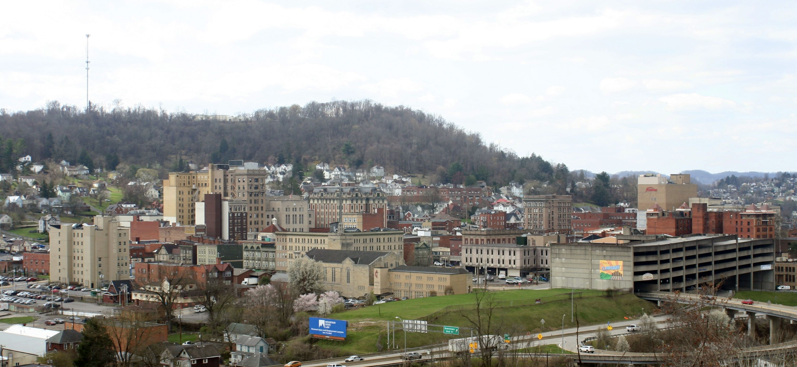

North Central West Virginia
Need faded parking lines refreshed, a lot restripe, or a driveway or parking lot sealed? Request a quote and a local crew will follow up.
Services
Most requests in this area are for faded parking lots, a driveway that looks dry and gray, or cracks that should be filled before a sealcoat. Tell the crew what you want the surface to be ready for.

Refresh faded stalls, paint a new layout, and add arrows, fire lanes, and ADA markings on a parking lot.
Parking lot striping
Protect a sound driveway or parking lot with an asphalt sealcoat, after the surface is cleaned and prepared.
Asphalt sealing details
Fill cracks in asphalt so water is less likely to get under the surface, often before a new sealcoat goes down.
Crack fillingHow a quote works
01
Send the form with your town, whether you need striping, sealing, or both, and a rough sense of the lot or driveway size. Photos of faded lines or worn asphalt help.
02
A local crew follows up, looks at the surface, and gives you a price before any paint or sealer goes down. Ask about timing and weather when they reply.
03
Once you approve the plan, the crew prepares the surface, fills cracks if needed, applies the sealcoat or the new lines, and tells you when it is ready for traffic.
Service area
Each town page has its own photo and local details. Nearby communities in Monongalia, Marion, and Harrison Counties are included when the job is a fit.

Parking lot striping and sealcoating in Morgantown, Westover, Star City, and Cheat Lake.
Morgantown details Photo: WeaponizingArchitecture, CC BY-SA 4.0
Line striping and asphalt sealing for lots and driveways in Fairmont and nearby Marion County towns.
Fairmont details Photo: WeaponizingArchitecture, CC BY-SA 4.0
Parking lot striping and sealcoating along the I-79 corridor in Bridgeport and nearby Harrison County.
Bridgeport details Photo: KLOTZPLATE, CC BY-SA 4.0
Line striping and sealcoating in Clarksburg, Nutter Fort, Stonewood, and nearby communities.
Clarksburg details Photo: WeaponizingArchitecture, CC BY-SA 4.0Also nearby: Cheat Lake, Westover, Star City, Granville, Pleasant Valley, White Hall, Nutter Fort, Stonewood, Anmoore, and Shinnston. If your town is close and not listed, choose Other in North Central WV on the form.
Questions
Request a quote
Tell us about the lot or driveway and your town. A local crew will follow up.
Share the work you need and the town. A local crew follows up on your request.